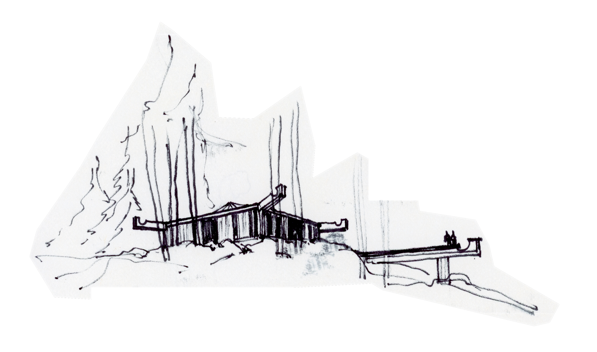
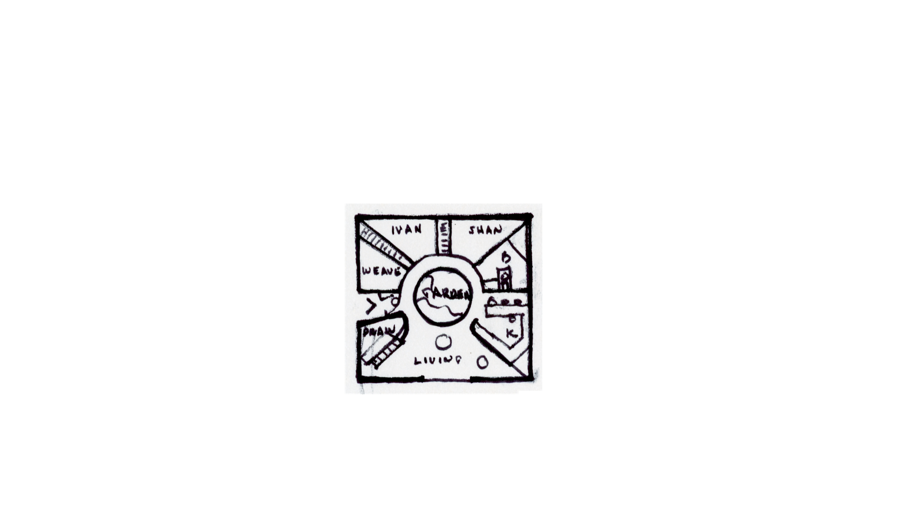
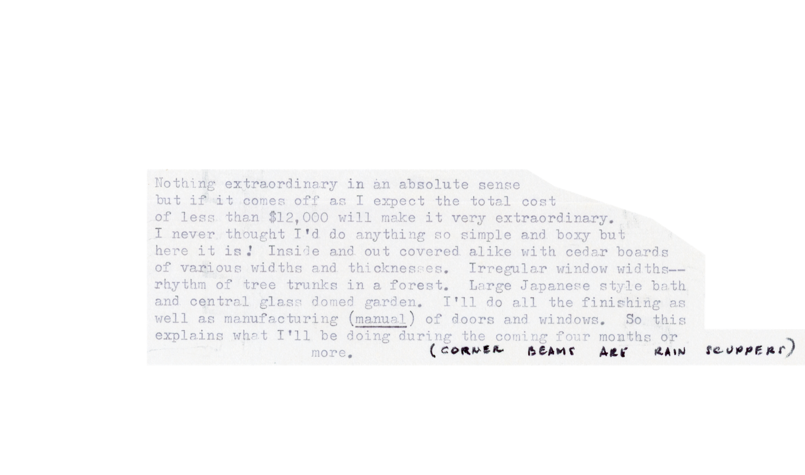

The house
Two wings, a generation apart

HH-IHC-0038 · 2024
Built into the slope from 1970 and never conventionally finished — an East Wing and a West Wing, architecturally distinct, drawn and redrawn across five decades.



Built into the slope from 1970 and never conventionally finished — an East Wing and a West Wing, architecturally distinct, drawn and redrawn across five decades.
The original house was built in 1970 by the architect Richard Morrow Hunter, a student of the American School architect Bruce Goff. Ric and his family built the house over fifty years — it was his ongoing life project and major work.
The house underwent a major renovation and addition in the mid-1990s. In the mid-2000s the Hunters placed a covenant on the property — the first in the District of Saanich. The final major bout of work came in 2018, with the addition of a dining room to the original 1970 structure.
Ric was an ordained Zen monk and, for a period, ran and facilitated the Victoria Zen Centre on the property. He died in 2023; the house was sold shortly after. Its new owners, Floyd Marinescu and Olivia Jol, have engaged the author for both research and design.
Drawings, photographs, furniture and correspondence across fifty years. There are three ways in.
Curated doorways into the record, in the curators' voices.
The full instrument — filters, search, letters. By request.
A finding aid, and how to arrange study — by appointment.
The Hunter House Foundation stewards the residence at 203 Goward Road and its archive, and makes the record public without diminishing it.